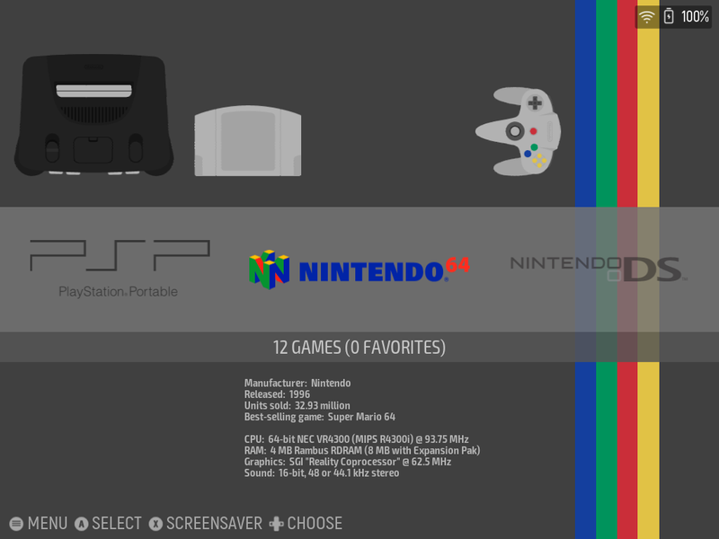

Alongside XMB, DSi and Minima, GammaOS Nano has a fourth home theme: Custom / ES-DE. It draws real EmulationStation-DE theme sets, complete with their variants, colour schemes, aspect ratios and per-game art, so your library can wear any of the hundreds of themes made by the ES-DE community.

What it is (and what it is not)
The ES-DE theme is a home theme built into Nano. Nano reads an ES-DE theme set and renders its system and game list views itself, using your normal Nano game library, scraped box art and game details. When you start a game, Nano launches it exactly as it does from the other themes, with the same emulators and settings.
It does not install or run the ES-DE app. You do not need ES-DE on the device, and nothing about your games, systems or emulators changes when you switch to this theme.
The Slate theme comes preinstalled, so the theme works the moment you pick it. More themes can be downloaded from the menu or copied onto the device by hand (both covered below).
Switching to the ES-DE theme
- Open Settings > Theme Settings > Home Theme.
- Pick Custom / ES-DE.

The home switches over straight away. The Home Theme row's description text only mentions XMB, DSi and Minima, but Custom / ES-DE is the fourth choice in the list.
Getting around
The ES-DE theme follows the ES-DE layout: a system view listing your game systems, and a game list for the system you open.
| Button | What it does |
|---|---|
| D-Pad | Move through systems in the system view, or through games in a game list |
| A | Open the highlighted system, or start the highlighted game |
| B | Go back from a game list to the system view |
| Start | Open the UI SETTINGS menu |
In a game list shown as a plain list, Left and Right flip to the previous or next system without going back. In a theme whose game list is a grid, Left and Right move between items in a row instead, and you press B to change system.
Only enabled systems that have games are shown. Like ES-DE, the system view lists them alphabetically by their full system name, whatever order you set for the other themes. Box art, descriptions and other game details come from your scraped art, so scraping your library (see Boxart) makes the ES-DE themes look their best.
The UI SETTINGS menu
Press Start on the ES-DE home to open UI SETTINGS. It is styled like ES-DE's own menu and holds everything the theme needs.

| Row | What it does |
|---|---|
| THEME DOWNLOADER | Browse and install themes from the official ES-DE themes list (needs internet, see below) |
| THEME | Pick which installed theme set the home uses |
| THEME VARIANT | Pick one of the theme's layouts, for example a carousel or a list (the choices come from the theme) |
| THEME COLOR SCHEME | Pick one of the theme's colour schemes, if it has any |
| THEME FONT SIZE | Pick one of the theme's font sizes, if it offers them |
| THEME ASPECT RATIO | Pick the layout made for your screen shape, for example 4:3 or 16:9 |
| APPLICATIONS | A list of your installed apps; press A to launch one |
| NANO SETTINGS | Leave the ES-DE menu and open the normal Nano menus (Quick Menu and Full Settings) |
On the THEME, VARIANT, COLOR SCHEME, FONT SIZE and ASPECT RATIO rows, press Left or Right to cycle the value in place, or press A to open the full list and pick one. The home reloads with your choice right away. B closes the menu (or goes back one page from a list).
Not every theme offers every option. The choices on each row are the ones the current theme set actually provides, so a theme with a single layout shows just that one.
Most ES-DE themes include layouts for several screen shapes. If a theme looks stretched or cramped, try a different THEME ASPECT RATIO that matches your panel (4:3 on most GammaOS handhelds).
Downloading themes
The THEME DOWNLOADER installs themes straight from the official ES-DE themes list.
- Make sure you are connected to Wi-Fi (see Network).
- Press Start, choose THEME DOWNLOADER and press A. The list is fetched the first time you open it ("Fetching theme list...").
- Scroll to a theme. Each entry shows how many variants, colour schemes and aspect ratios it has.
- Press A to install it. A progress bar shows while it downloads and unpacks, and the theme is marked INSTALLED once it is done.
- Press B to go back, then pick your new theme on the THEME row.

If the list does not load, the downloader shows a message asking you to check Wi-Fi. Connect to a network and open the downloader again.
Themes can be large (some are hundreds of megabytes with videos and artwork), so leave the device on and connected until the install finishes.
Adding themes by hand
You can also copy an ES-DE theme onto the device yourself, for example one you downloaded on a PC. Nano looks for themes in the same folder the ES-DE app uses on Android:
Internal storage/ES-DE/themes
- Get the theme on your PC and unzip it if needed.
- Copy the theme's folder into
ES-DE/themeson the device's internal storage (create theES-DEandthemesfolders if they do not exist yet). The theme's own folder must sit directly insidethemes, with itscapabilities.xmlfile at the top of that folder, for exampleES-DE/themes/my-theme/capabilities.xml. - Open UI SETTINGS and pick the theme on the THEME row.
To get the folder onto the device, use USB file transfer (MTP) first. If that does not work for you, ADB Explorer is a good second choice, or copy it over a network share (see Network Shares).
A downloaded theme zip often wraps everything in an extra folder (for example my-theme-main/my-theme/...). If the theme does not appear in the list, check that capabilities.xml is one level inside themes, not two.
Getting back to Nano settings
Everything in Nano's own menus is still one step away:
- Press Start and choose NANO SETTINGS.
- Pick Quick Menu for the global actions, or Full Settings for the whole Settings tree.
- Press B to back out, and you land on the ES-DE home again.
Switching back to another theme
Go to Start > NANO SETTINGS > Full Settings > Theme Settings > Home Theme and pick GammaOS XMB, DSi Menu or Minima. Your ES-DE theme choice is remembered, so switching back later picks up where you left off.
Tips
- Heavy themes on 1 GB devices. Some ES-DE themes are packed with animation, video and large artwork. On devices with 1 GB of memory these can be slow to load and scroll. If a theme feels sluggish, try a lighter one (Slate is a good baseline) or a simpler variant of the same theme.
- Idle is cheap. When nothing on screen is moving, the ES-DE home stops redrawing, so leaving it on a static screen barely uses the CPU.
- Scrape first. Themes that show covers, screenshots or descriptions look empty for games without scraped art. See Boxart.
- Same games everywhere. Turning systems on or off or editing them in Game Systems changes what the ES-DE theme shows too (only the order differs, since ES-DE themes sort systems alphabetically).
Related
- Home Themes for the other three looks.
- Wallpapers & Theme Settings for the settings shared by every theme.